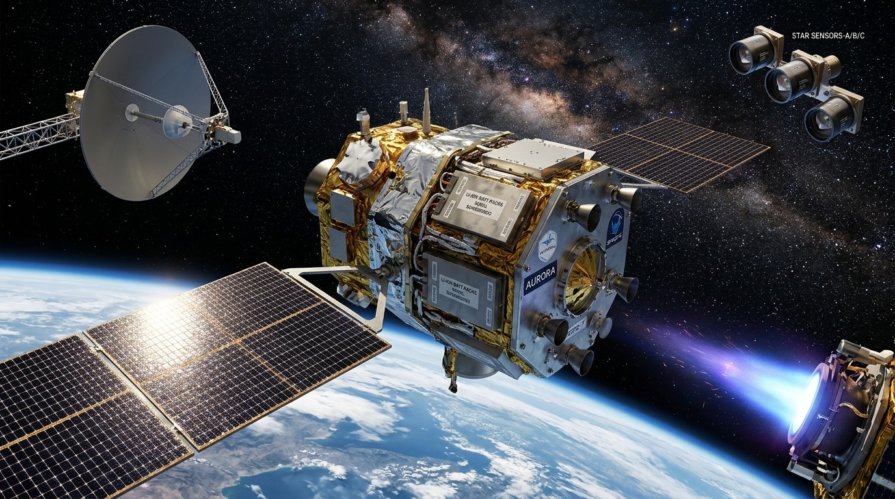

1. Antena Parabólica
É o principal canal de comunicação do satélite com as estações na Terra. Com sua superfície refletora em formato de prato, ela focaliza e envia para o solo os dados e as imagens de alta resolução capturadas no espaço, além de receber os comandos de controle transmitidos pela equipe de operação terrestre.
2. Sensor Estelar
Funciona como o sistema de navegação óptica da espaçonave. Por meio de câmeras de alta precisão, ele fotografa o campo de estrelas ao redor e compara essas imagens com um catálogo astronômico interno, determinando a orientação exata do satélite no espaço tridimensional com altíssima exatidão.
3. Corpo do Satélite
É a estrutura central (ou módulo principal) que abriga e protege os computadores de bordo, baterias e sistemas eletrônicos sensíveis contra as variações térmicas extremas e a radiação do ambiente espacial. Ele também serve como base mecânica firme onde são fixados os painéis solares, antenas e instrumentos da missão.
4. Painel Solar
Constitui a fonte primária de energia elétrica do satélite. Formado por células fotovoltaicas de alta eficiência, ele capta a luz do Sol e a converte em eletricidade para alimentar todos os equipamentos de bordo e carregar as baterias internas, garantindo a operação contínua mesmo nos períodos de eclipse.
5. Propulsor de Plasma
Trata-se de um sistema moderno de propulsão elétrica utilizado para ajustes orbitais finos e manutenção de altitude. Ele ioniza um gás (como o xenônio) e acelera as partículas usando campos magnéticos ou elétricos, gerando um empuxo de altíssima eficiência com consumo mínimo de combustível em comparação aos motores químicos tradicionais.